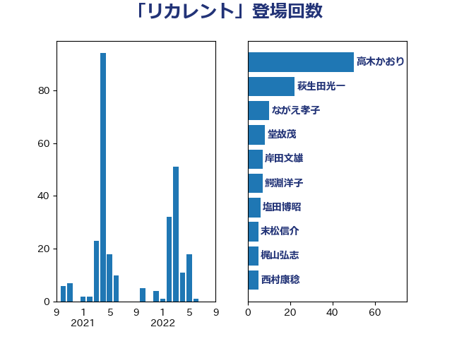

単語「リカレント」

| 高木かおり | 日本維新の会 | 50 回 |
| 萩生田光一 | 自由民主党 | 22 回 |
| ながえ孝子 | 無所属 | 10 回 |
| 堂故茂 | 自由民主党 | 8 回 |
| 岸田文雄 | 自由民主党 | 7 回 |
| 鰐淵洋子 | 公明党 | 7 回 |
| 塩田博昭 | 公明党 | 6 回 |
| 末松信介 | 自由民主党 | 5 回 |
| 梶山弘志 | 自由民主党 | 5 回 |
| 西村康稔 | 自由民主党 | 5 回 |
| 吉田久美子 | 公明党 | 4 回 |
| 田村憲久 | 自由民主党 | 4 回 |
| 野田聖子 | 自由民主党 | 4 回 |
| 井上信治 | 自由民主党 | 3 回 |
| 前原誠司 | 国民民主党 | 3 回 |
| 岬麻紀 | 日本維新の会 | 3 回 |
| 石井啓一 | 公明党 | 3 回 |
| 菅義偉 | 自由民主党 | 3 回 |
| 上野通子 | 自由民主党 | 2 回 |
| 下村博文 | 自由民主党 | 2 回 |
| 丹羽秀樹 | 自由民主党 | 2 回 |
| 伊藤孝恵 | 国民民主党 | 2 回 |
| 勝部賢志 | 立憲民主党 | 2 回 |
| 古屋範子 | 公明党 | 2 回 |
| 塩村あやか | 立憲民主党 | 2 回 |
| 池田佳隆 | 自由民主党 | 2 回 |
| 田村まみ | 国民民主党 | 2 回 |
| 緑川貴士 | 立憲民主党 | 2 回 |
| 赤池誠章 | 自由民主党 | 2 回 |
| 世耕弘成 | 自由民主党 | 1 回 |
| 中川宏昌 | 公明党 | 1 回 |
| 吉良よし子 | 日本共産党 | 1 回 |
| 宮内秀樹 | 自由民主党 | 1 回 |
| 宮本周司 | 自由民主党 | 1 回 |
| 小林鷹之 | 自由民主党 | 1 回 |
| 山口那津男 | 公明党 | 1 回 |
| 後藤茂之 | 自由民主党 | 1 回 |
| 新藤義孝 | 自由民主党 | 1 回 |
| 浜口誠 | 国民民主党 | 1 回 |
| 猪口邦子 | 自由民主党 | 1 回 |
| 石井苗子 | 日本維新の会 | 1 回 |
| 藤井比早之 | 自由民主党 | 1 回 |
| 谷田川元 | 立憲民主党 | 1 回 |
| 鈴木俊一 | 自由民主党 | 1 回 |
| 高橋光男 | 公明党 | 1 回 |